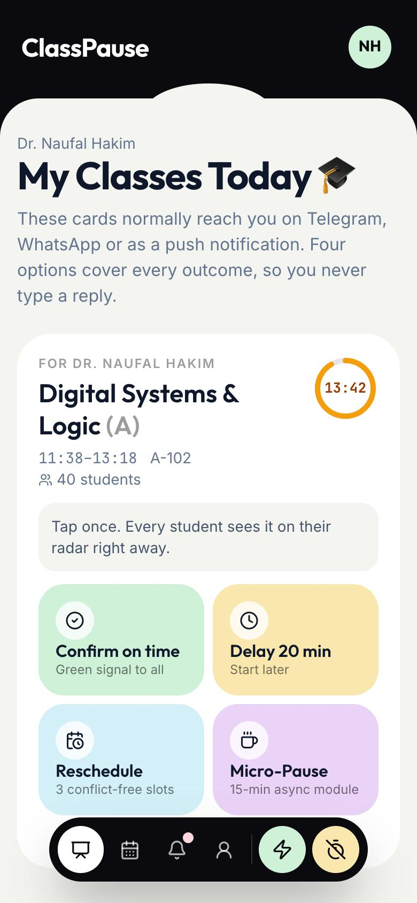
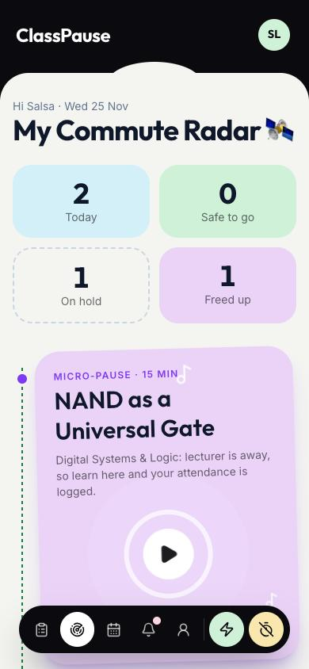
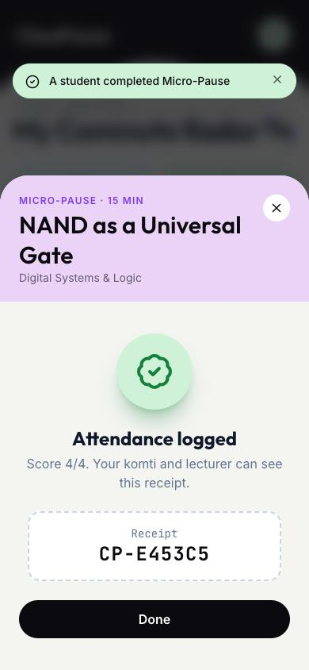
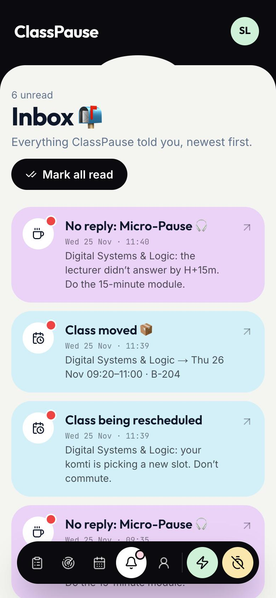
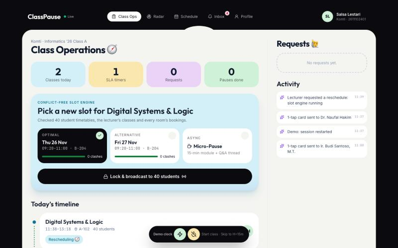

ClassPause replaces WhatsApp back-and-forth about class status with a 1-tap lecturer confirmation, a commute signal for students, and a 15-minute learning fallback when a class does not happen.
| Item | Detail |
|---|---|
| Project title | ClassPause: Autonomous Class Coordination Protocol and Micro-Learning Continuity Hub |
| Team name | Bug itu fitur |
| Selected case | Case 1: Smarter Campus and Learning |
| Live prototype | https://classpause.kousozo.tech |
| Repository | https://github.com/fk0u/classpause |
| Member | Campus | Role |
|---|---|---|
| Al-Ghani Desta Setyawan Team Leader · Hacker | Universitas Muhammadiyah Kalimantan Timur (UMKT) | All application code (full stack and deployment), research synthesis, proposal lead, field research |
| Andhika Galih Isya Putra Hipster | Institut Teknologi Kalimantan (ITK) | UI/UX design and visual direction, alternatives audit, field research |
| Johann Ariel Givel Filemon Silalahi Hustler | Universitas Mulawarman (Unmul) | Business model, go-to-market and pitch, survey data processing, field research |
84.2% of affected students (32 of 38) faced unclear lecturer attendance or sudden rescheduling in the last three months, and 52.6% travelled to campus for a class that was then cancelled.
Across three East Kalimantan universities, class status is coordinated by chat. A lecturer cancels late or not at all, the class coordinator (komti) chases the lecturer one-to-one, and students wait or commute without knowing. One respondent was told at 09:10 that an 08:00 class would not run. Campus LMS outages at peak hours (08:00, 13:00, 22:00–23:00) also cause students who were present to be marked absent (Alpa).
| User | Need | Current pain |
|---|---|---|
| Students | Know before leaving home whether a class runs | Wasted commutes, idle gaps of 1–3 hours, unfair absence marks |
| Komti / PJ Matkul | Confirm classes and agree makeup slots without chasing | Manual 1-to-1 chats, slow or no replies, conflicting information |
| Lecturers | Tell 40 students the status in seconds | Free-text replies, no view of slots that avoid student or room clashes |
We ran the Kaltim Campus Service Survey (N = 48; 46 active students; 38 affected in the last three months) across UMKT, Unmul, ITK and six other campuses, plus three months of field observation by each member.
| Finding (n = 38 affected students) | Result |
|---|---|
| Class status uncertainty or sudden rescheduling (union of two items) | 84.2% (32), 95% CI ±11.6 pp |
| Ranked it the single most disruptive issue | 50.0% (19) |
| Problem recurs (2 or more times in 3 months) | 89.5% (34); mean 4.25 incidents |
| Happened within the last 7 days | 63.2% (24) |
| Wasted a commute to a cancelled class | 52.6% (20) |
| Time lost per incident | mean 52.1 min (median 45); 55.3% lose 30 min or more |
The cost: 4.25 incidents × 52.1 minutes ≈ 221 minutes, or about 3.7 hours, lost per affected student every three months; across our 38 affected respondents that is roughly 140 hours in one quarter (respondents only, not a campus-wide estimate).
Answers to the “most disruptive issue” question are not evenly spread: a chi-square goodness-of-fit test gives χ² = 13.68 (df = 5, p = 0.018), so the concentration on class uncertainty is unlikely to be chance.
| Alternative | Used by | Why it fails |
|---|---|---|
| WhatsApp class groups | 60.5% of affected students | Slow or unanswered replies (52.6%), message clutter |
| Asking the komti | 42.1% | Komti also waits on the lecturer; conflicting information (36.8%) |
| Messaging the lecturer | 26.3% | Lecturer must invent a new slot in free text |
| Campus SIAKAD / LMS | All campuses | Static timetables; outages at peak hours |
| “Polite chat template” tools | A senior team at Unmul | Still free-text negotiation; the lecturer still has to work out a clash-free slot |
ClassPause turns class coordination into a fixed protocol: the lecturer gets one card with four buttons, and if nobody taps by 15 minutes after start, the class becomes a 15-minute learning module instead of a dead hour.
Single-use link, no login, no typing. Students see “Hold commute”.
Every radar turns green, or shows +20 min.
Komti locks one; all students are notified.
15-min module + quiz; finishing it logs attendance.




| User | Value | Built screens |
|---|---|---|
| Student | Knows whether to leave before leaving; turns a cancelled class into learning; avoids unfair absence | Commute Radar with live tiles and day calendar, Micro-Pause play card, quiz and receipt, leave request, inbox, weekly schedule, profile |
| Komti | No more chasing; picks a makeup slot from 3 instead of negotiating | Class Operations: SLA timers, slot engine with Lock & broadcast, request cards, activity feed |
| Lecturer | Answers 40 students with one tap, no typing | Push notification → 1-tap card (dashboard or magic link) |
Out of scope: grading, full LMS replacement, parking and facility reporting (raised in our field notes but outside Cluster 1).
Four fixed answers and a 15-minute deadline replace open-ended chat; silence has a defined outcome.
The engine checks every enrolled student’s timetable, the lecturer’s classes and room capacity, then offers only three options (Hick’s law).
A dropped class becomes a short module whose completion records attendance, so the hour is not lost.
Status readable in under a second, primary actions in a thumb-reach dock, push in the user’s language, installable on the home screen.
ClassPause runs today as one full-stack Next.js application on PostgreSQL, deployed at classpause.kousozo.tech with a synthetic East Kalimantan campus dataset.

| Feature | How it works | Status |
|---|---|---|
| Server SLA clock | Sessions are created from the weekly timetable; prompts at H−2h; conditional update moves unanswered classes to Micro-Pause at H+15m, so a last-second reply and the expiry cannot both win | Live |
| Lecturer 1-tap card | Single-use token (only its hash is stored), expires at H+15m; same card on the dashboard | Live |
| Slot engine | Next 6 campus days × standard 100-min blocks; lecturer free and a big-enough free room are hard rules; student clashes are scored | Live |
| Commute Radar | Live status tiles, SLA ring, day calendar with a “now” line | Live |
| Micro-Pause | Step module + quiz; server scores it and issues a receipt code | Live |
| Leave requests | Student submits sick or dispensation; komti approves or declines | Live |
| Notifications | Every protocol event goes to the inbox and Web Push, in each recipient’s language; dead subscriptions pruned | Live |
| PWA & languages | Manifest, generated icons, install prompt, offline page; English and Bahasa Indonesia | Live |
| Campus SSO | Persona picker stands in for single sign-on | Planned |
| WhatsApp Business | Second delivery adapter beside Telegram | Planned |
Next.js 15 (App Router, server actions) with React 19 and TypeScript; Tailwind CSS 4, Motion and Lucide for the interface; PostgreSQL with Drizzle ORM; zod for validation; Server-Sent Events for live updates; Web Push with VAPID keys; jose for signed sessions; nginx, pm2 and Docker on a single VPS.
Slow-changing data (classes, rooms, modules) is cached across requests for an hour by tag; the current user and lookups are cached per request; live class state is never cached and reaches clients by push. Queries run in parallel over a connection pool, with indexes on session status and deadline, start time, enrollments and notifications.
| Data | Source | Today |
|---|---|---|
| Class schedules and rooms | Campus timetable export or komti entry | Synthetic seed |
| Student timetables (KRS) | Student import or komti upload, with consent | Synthetic seed (40 students) |
| Lecturer responses | Taps on the 1-tap card | Real, recorded in PostgreSQL |
| Micro-Pause content | Lecturer or komti uploads a summary and quiz | Three sample modules by the team |
The protocol, the three role views and the notification layer are built and deployed; the remaining work is real campus data, sign-in and a second messaging channel.
Survey analysis and field notes · design system and redesign · PostgreSQL schema and migrations · server SLA clock · slot engine · magic links · Micro-Pause with receipts · leave requests · SSE live updates · Web Push and inbox · profile, weekly schedule · installable PWA · English and Bahasa Indonesia · HTTPS deployment
Usability test (26 Nov) · campus SSO · WhatsApp Business delivery · import of real campus timetables · push verified on a range of real phones · translated module content
| Member | Contribution so far | Next |
|---|---|---|
| Al-Ghani Desta Setyawan Hacker · Team Leader | Wrote all application code: database, server protocol, slot engine, push, PWA, deployment. Survey design and statistics, abstract, proposal | SSO, WhatsApp adapter, timetable import; video narration |
| Andhika Galih Isya Putra Hipster | UI/UX: design direction, screen flows and visual review of every role view; field research at ITK, alternatives audit | Usability sessions, UI fixes from findings |
| Johann Ariel Givel Filemon Silalahi Hustler | Business: value proposition, adoption path through komti, sustainability and pitch; field research at Unmul, survey data processing | Pilot partner outreach, pitch on Final Day |
The app works end to end, but we have not yet tested it with real users; the first usability test runs on 26 November and its results will replace the plan below.
| Test | Participants | What we measure | Pass mark |
|---|---|---|---|
| Glance test on the Commute Radar | 9–12 students, three campuses | Correct go / hold / don’t-commute answer; time to answer | 90% correct within 3 s |
| Komti: lock a makeup slot | 3 komti, one per campus | Time to broadcast vs. their chat routine | Under 30 s |
| Lecturer: answer the push card | 2–3 lecturers if available | Taps and seconds to respond; would they use it | One tap, under 10 s |
| Micro-Pause completion | Same students | Share who finish; usefulness (1–5) | 70% completion |
| Push delivery | Participants’ own phones | Notification arrives within a minute, in their language | 90% of devices |
Our survey gives 4.25 incidents per affected student every three months at 52.1 minutes each: about 221 minutes, or 3.7 hours, per student per three months that ClassPause aims to turn into either staying home or a verified 15-minute module. After a pilot we will track wasted commutes avoided, minutes from lecturer prompt to class status, and Micro-Pause completion.
| Risk | Effect | Mitigation |
|---|---|---|
| Push blocked or not supported on a phone | Lecturer misses the card | Inbox and Telegram as fallbacks; the H+15m expiry still protects students |
| Lecturers ignore the card | Too many Micro-Pauses | Komti can confirm on the lecturer’s behalf; data shows which classes need follow-up |
| No campus timetable data | Slot engine runs on partial data | Komti uploads the class timetable; students import their KRS |
| Micro-Pause seen as skipping lectures | Campus pushback | Module set by lecturer or komti; counts only for that session, never replaces exams |
| Single-server limits | Slow at peak hours | Bus can move to PostgreSQL LISTEN/NOTIFY or Redis to run several processes |
ClassPause stores only what the flow needs: name, student number, class list, timetable slots, attendance receipts and push subscriptions. Timetables are used to find free slots and are never shown to other students. Lecturer links are single-use, stored as hashes and expire at H+15m. Every input is validated on the server, sessions are signed cookies, and demonstrations use synthetic data only.
The first users are class coordinators, who can adopt ClassPause for one class without campus integration. Once several classes use it, we approach the faculty to connect the campus timetable and SIAKAD. Running costs are small: one VPS, PostgreSQL and the messaging APIs; push notifications are free.
| Resource | Use | License |
|---|---|---|
| Next.js, React | Web app framework | MIT |
| Tailwind CSS, Motion, Lucide | Styling, animation, icons | MIT / MIT / ISC |
| PostgreSQL, Drizzle ORM, postgres.js | Database and access | PostgreSQL / Apache-2.0 / Unlicense |
| zod, jose, web-push | Validation, sessions, push | MIT / MIT / MPL-2.0 |
| Outfit, Inter, JetBrains Mono (Google Fonts) | Typography | SIL Open Font License |
| Tool | What it did | What the team did |
|---|---|---|
| Claude Code (Anthropic) | Semifinal: generated application code, the design system and deployment scripts, and drafted this proposal, the pitch deck and the video script from our survey data and notes | Wrote the requirements and prompts; reviewed, tested and corrected the output; owns all decisions |
| Claude Sonnet 5.5 (Anthropic) | Helped draft administrative documents (survey report formatting, abstract wording) | Ran the survey, collected the data, checked every figure |
The signed declaration is attached as the appendix on the next page.
I, the undersigned, as the Team Leader of Bug itu fitur, hereby declare on behalf of all registered team members that the project entitled "ClassPause: Autonomous Class Coordination Protocol and Micro-Learning Continuity Hub", submitted to STACK 2026 organized by GDGoC ITB, is our original work, developed specifically for this competition. We affirm that this project is not copied from, adapted from, or repackaged from any existing project or previous competition submission. All substantive aspects of the proposed solution and its development have been carried out by the registered team members. Any third-party resources, including frameworks, libraries, APIs, datasets, or general-purpose templates, have been used with appropriate permissions and acknowledgments. Furthermore, any material AI assistance has been properly disclosed in the proposal and product README, including the tools used and their respective roles. We also confirm that all information regarding research, testing, development progress, and individual contributions is presented accurately and truthfully.
Samarinda, 30 November 2026
Team Leader,
Al-Ghani Desta Setyawan
[Student ID] – Universitas Muhammadiyah Kalimantan Timur